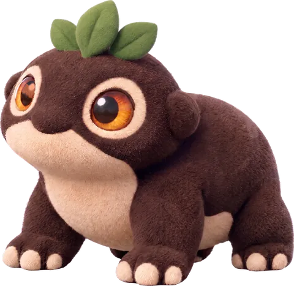
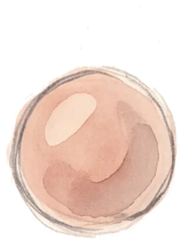
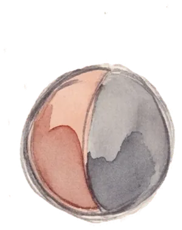
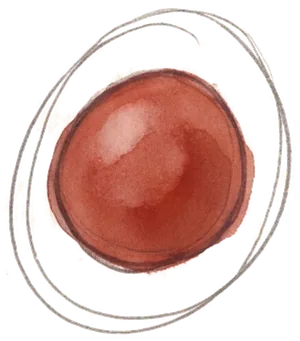
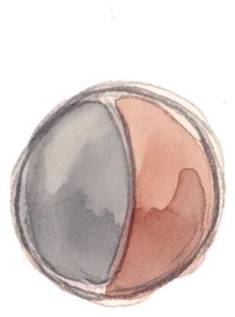
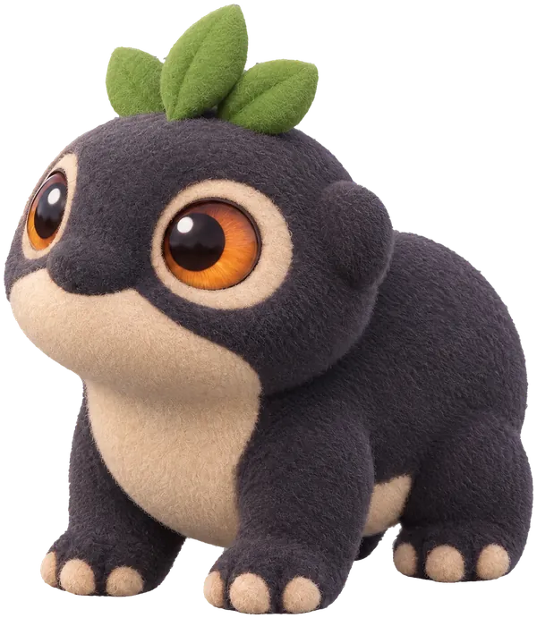
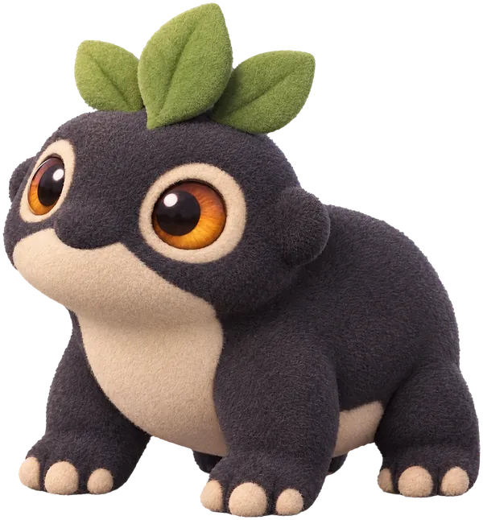
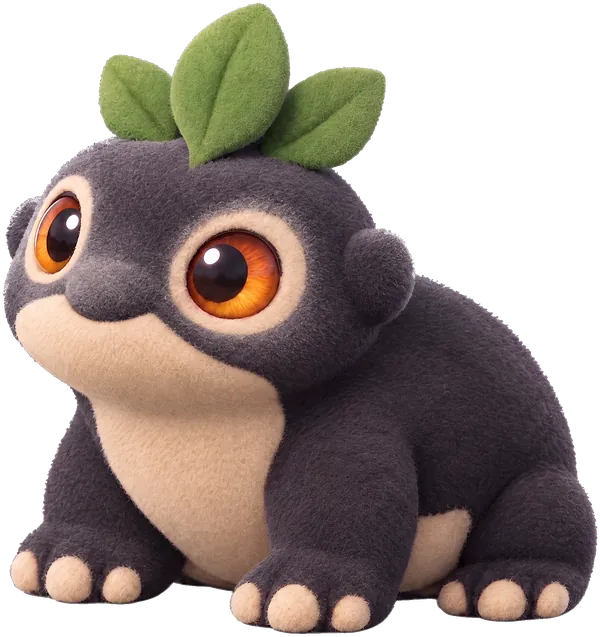

Families
Every Loika its own.
No two Loikas come out of their pods the same. Each one carries two copies of everything, drawn from both its parents.



Seven of Pip's family, as felt figures.
What shows, what hides
One is enough.
Thistle carries Sable's bare head and wears Bramble's crest. One copy of a crest is enough to show. The bare-head copy stays hidden, and it can still pass to Thistle's children.
Other looks blend. Ears go from small and round to a little bigger, and a child's fall somewhere between its parents'.
The cross
Two Loikas, one pod.
Two adult mibis of one kind make one child, and it has both of them for parents.
Before you spend anything, the Station draws what the child could be. Where two copies decide, it shows four seeds, a quarter each. Where a look blends, it shows the two ends the child can reach.
"Never gives me odds. Gives me four seeds, and I count them."
From the keeper's notes in the field guide.




Four seeds, a quarter each.
Kin
How close the two are.
The closer the kin, the less the child can vary. The Station tells you how close, in words.
- no kin in common
- distant kin
- cousins
- half kin
- close kin
- the same line
Every mibi records its two parents, so its family goes back with it. Two mibis from the wild share nothing. A parent and its child, or two full siblings, share a quarter.
Cross close kin, and what was hidden starts to show, and the line stops changing. Cross far, and it keeps moving.
A life
Juvenile, adult, elder.
A Loika comes out of its pod small and young. Before long it's an adult, and a good while after that it's an elder. It's slower then, but its calm carries twice as far.



One Loika at each age.
The stamp
A whole genome, on a stamp.
Every mibi can be written down. As a line of letters, its genome string. Or as a stamp: a postage stamp of square cells that only the game's own reader can read. It isn't a QR code, and no ordinary scanner reads it.
On these stamps, blue cells are one copy and red cells the other. A chapter you haven't read is an empty block, never a guess. A child's stamp repeats one copy from each parent, so a family lines up on paper.
These three are drawn live on this page from Loikas' real genome strings, by the same code the game uses.